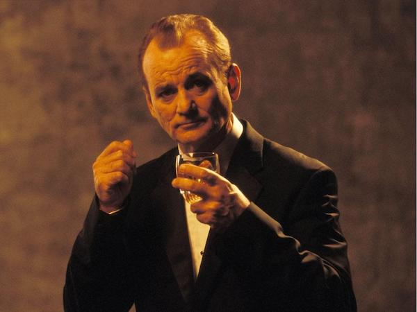
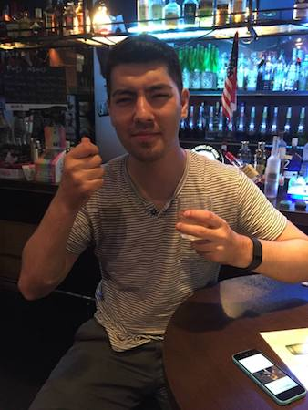

Chris Rice Loves Scotch But Doesn't Really Know a Whole Lot


This blog stemmed from three things: a love of scotch, a lack of understanding about scotch, and a desire to learn how to be an amateur web developer. Thanks for being a part of this journey!
UPDATE c.a. 6.8.22 - Well it looks like I'm back at it again after quitting my job, so time to focus on this full-time again. But this time we're going all the way!